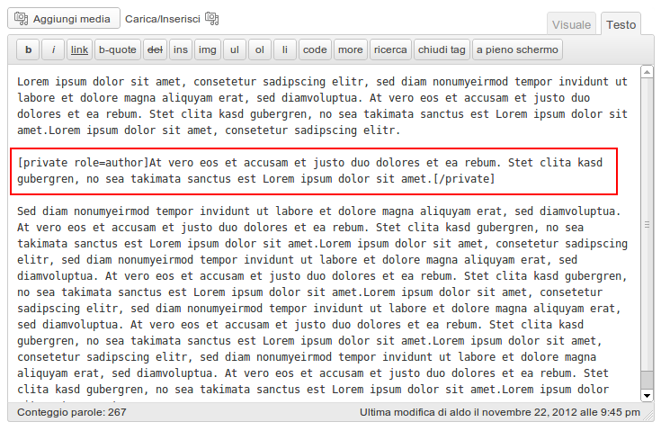

Contributors: aldolat, specialk
Donate link: http://dev.aldolat.it/projects/private-content/
Tags: content, private
Requires at least: 3.0
Tested up to: 3.5.1
Stable tag: 2.1
License: GPLv3 or later
License URI: http://www.gnu.org/licenses/gpl-3.0.html
Display a portion of a post content only to users of a specific role.
This plugin provides a shortcode to display a portion of a post content only to users of a specific role. For example, you can show the hidden text to Editors or to Authors or to any other WordPress role.
Please, note that an Administrator can read an Editor private content or a Subscriber private content, and so on. Same thing for Editor, Author, Contributor, and Subscriber: a higher role can read a lower role content.
Also you can show the hidden text only to a certain role. For example, you can mark a text as visible only to Contributors and hide it to higher roles, such as Administrators or Editors and so on.
Usage:
Display this text only to Administrators:
[private role="administrator"]Text for Administrators[/private]
Display this text only to Administrators and Editors:
[private role="editor"]Text for Editors[/private]
Display this text only to Administrators, Editors, and Authors:
[private role="author"]Text for Authors[/private]
Display this text only to Administrators, Editors, Authors, and Contributors:
[private role="contributor"]Text for Contributor[/private]
Display this text only to Administrators, Editors, Authors, Contributors, and Subscribers:
[private role="subscriber"]Text for Subscribers[/private]
If you want to show a note only to a certain role, you have to use a <role>-only option.
In this way, for example, an Administrator or an Editor (roles higher than Author) cannot read a note only for Authors.
These are all the cases:
[private role="editor-only"]Text for Editors only[/private]
[private role="author-only"]Text for Authors only[/private]
[private role="contributor-only"]Text for Contributors only[/private]
[private role="subscriber-only"]Text for Subscribers only[/private]
[private role="visitor-only"]Text for Visitors only[/private]
WordPress roles in descending order:
Administrator
Editor
Author
Contributor
Subscriber
This section describes how to install the plugin and get it working.
private-content directory to the /wp-content/plugins/ directoryYes, you have to edit the CSS file of your current theme. The shortcode generates a <p> HTML tag with two classes:
"private" to stylize all private contents
"[role]-content" to stylize the content for that specific [role].
A third class is added, in case you make a note only for a specific role, for example "contributor-only".

Upgrade in order to use the new role-only feature.
No upgrade notice.
Many thanks to:
Jean Baptiste Jung for the idea behind this plugin;
Jeff Starr for the initial code.